2.1 Các kiểu dữ liệu
Kiểu dữ liệu số
Khi nhập vào số bao gồm 0, …, 9; +, -, *, /, (, ), E, %, $, ngày và giờ, thì số theo đúng quy ước trong môi trường Windows sẽ mặc định được căn lề phải trong ô.
Để đặt quy định về cách nhập và hiển thị số trong Windows (Hình 2.2): chọn lệnh Start -> Control Panel -> Region and Language -> Format -> Additional Settings -> Number.
Kiểu dữ liệu dạng số (Number)
- Decimal symbol: Quy ước dấu phân cách phần thập phân.
- No. of digits after decimal: Số chữ số thập phân.
- Digits grouping symbol: Dấu phân cách hàng nghìn.
- Digits grouping: Số số hạng trong group.
- Negative number format: Định dạng số âm
- List separator: Quy ước dấu phân cách nghìn.
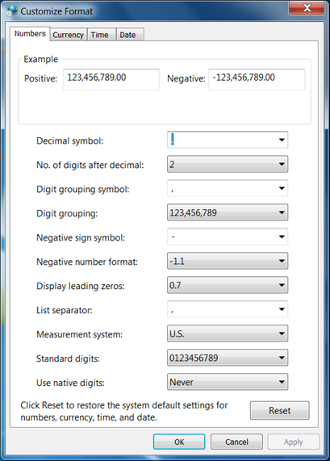
Hình 6.3. Thiết lập cách nhập và hiển thị số trong Windows
Dữ liệu tiền tệ
Excel cho phép người dùng định dạng cách hiển thị các loại tiền tệ khác nhau. Dấu chấm phân cách giữa các phần theo quy định của hệ thống như kiểu Number. Kiểu dữ liệu tiền tệ đúng sẽ được tự động căn phải.
Dữ liệu dạng ngày (Date)
Excel sẽ hiểu dữ liệu kiểu Date khi ta nhập vào đúng theo quy định của Windows, dữ liệu sẽ căn phải trong ô. Ngược lại, Excel sẽ hiểu là kiểu chuỗi.
Để kiểm tra và thay đổi quy định khi nhập dữ liệu kiểu Date cho Windown: chọn Start -> Control Panel -> Regional and Language -> Format -> Additional Settings -> Date.
Dữ liệu dạng giờ (Time)
Excel sẽ hiểu dữ liệu kiểu Time khi ta nhập đúng theo quy định của Windows, mặc định là giờ: phút: giây (hh: mm: ss AM/PM). Dữ liệu sẽ canh phải trong ô.
Dữ liệu dạng chuỗi (Text)
Dữ liệu chuỗi bao gồm ký tự chữ và số. Khi nhập thì mặc định được căn thẳng trái trong ô.
Công thức (Formula)
Công thức bắt đầu bởi dấu bằng (=), giá trị hiển thị trong ô là kết quả của công thức, có thể là một trị số, một ngày tháng, một giờ, một chuỗi hay một thông báo lỗi.2.2 Các toán tử trong Excel
Công thức trong Excel là sự kết hợp giữa các toán tử và toán hạng
- Các toán tử như: +, -, *, /, &, ^, >, <, >=, <=, =, <>, :, …
- Các toán hạng như: hằng, hàm, địa chỉ ô, địa chỉ vùng, …
2.3 Định dạng dữ liệu
2.3.1 Định dạng dữ liệu số.
- Chọn vùng dữ liệu cần định dạng
- Chọn Home à (Group Cells) à Format à Format Cells, chọn thẻ Number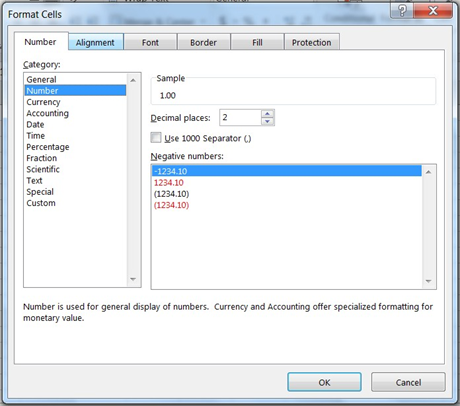
Hình 6.4. Hộp thoại Format Cells
Dữ liệu số khi nhập vào một ô trên bảng tính phụ thuộc vào 2 thành phần: Loại (Category) và mã định dạng (Format code). Một số có thể hiển thị theo nhiều loại như Number, Date, Percentage, … mỗi loại có nhiều cách chọn mã định dạng
Chọn loại thể hiện trong khung Category
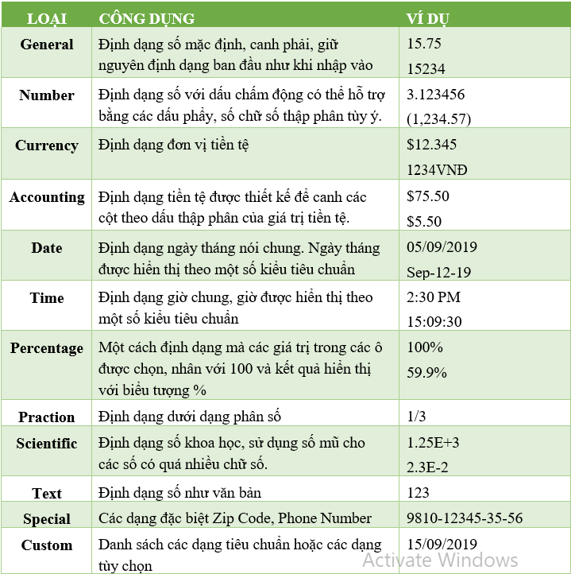
Bảng 6-1 Các mẫu thể hiện dữ liệu
Ngoài ra có thể định dạng nhanh cách hiển thị số bằng cách dùng công cụ trên thanh Formatting.
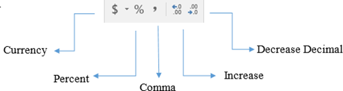
Hình 2.5. Định dạng hiển thị số bằng công cụ Formatting
- Currency: Định dạng kiểu tiền tệ
- Percent Style: Định dạng kiểu phần trăm (%)
- Comma Style: Định dạng có dấu (,) phân cách
- Decrease Decimal: Giảm bớt một sô sler phần thập phân
2.3.2 Định dạng đơn vị tiền tệ
Để kiểm tra, thay đổi định dạng cách hiển thị tiền tệ trong môi trường Windows, Chon Start à Control Panel à Regional and Language à Additional Settings à Currency.
- Currency symbol: Nhập dạng ký hiệu tiền tệ
- Positive currency format: Chọn vị trí đặt ký hiệu tiền tệ.2.4 Thao tác với khối
* Đặt tên cho vùng
Để thuận tiện cho việc thao tác trên dữ liệu, ta có thể đặt tên cho một vùng dữ liệu được chọn như sau:
- Chọn vùng dữ liệu cần đặt tên.
- Nhập tên vùng dữ liệu vào vùng Name box. Nhấn Enter.
Khi một vùng dữ liệu được đặt tên, người dùng có thể sử dụng tên vùng dữ liệu thay cho địa chỉ vùng dữ liệu.
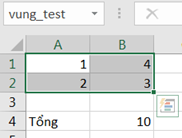
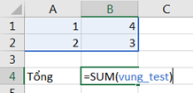
* Sao chép dữ liệu từ ô này sang ô khác và điền dữ liệu (Sử dụng chức năng Copy và Paste)
- Chọn vùng dữ liệu nguồn cần sao chép
- Chọn Home à (Group Clipboard) à Copy hoặc ấn Ctrl+C
- Di chuyển con trỏ ô đến ô đầu tiên của vùng đích
- Chọn Home à (Group Clipboard) à Paste hoặc nhấn Ctrl+C
* Tự động điền dữ liệu (Auto Fill)
- Sử dụng tính năng AutoFill:
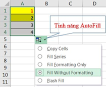
Khi Drag tại Fill handle xuống phía dưới hoặc sang phải. Auto Fill sẽ tạo ra dãy các giá trị tăng dần dựa theo mẫu trong dãy ô đã được chọn
- Sử dụng tính năng Fill từ Ribbon: Ngoài tính năng AutoFill, còn có thể sử dụng lệnh Fill từ Group Editing để thực hiện những sao chép đơn giản.
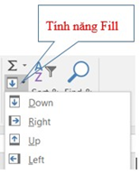
+ Đặt con trỏ tại ô muốn sao chép và Drag đến những ô muốn điền giá trị
+ Chọn Home à (Group Editing) à Fill, sau đó chọn lệnh Down, Right, Up, Left thích hợp với hướng muốn sao chép- Sử dụng chức năng Copy và Paste Special:
Chức năng Paste Special giúp người dùng có thể sao chép một thành phần nào đó của dữ liệu.
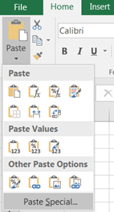
+ Chọn dữ liệu cần sao chép
+ Chọn Home -> (Group Clipboard) -> Copy
+ Chọn vị trí cần sao chép đến
+ Chọn tab Home -> (Group Clipboard) -> Paste -> Paste Special
+ Xuất hiện hộp thoại Paste Special. Chọn dạng sao chép phù hợp
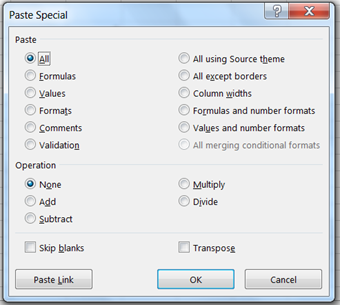
Hình 6.6. Hộp thoại Paste Special
- Formulas: Chỉ sao chép công thức
- Values: Chỉ sao chép định dạng
- Comments: Chỉ sao chép chú thích
- Validation: Sao chép kiểm tra tính hợp lệ dữ liệu
- All except Borders: Sao chép tất cả ngoại trừ đường viền
- Columm widths: Sao chép độ rộng cột
- Formulas and number formats: Sao chép công thức và định dạng dữ liệu số
- Values and number formats: Sao chép giá trị và định dạng dữ liệu số
- Operation: Add, Subtract, Multiply, Divide. Sao chép đồng thời thực hiện phép toán cộng, trừ, nhân, chia.2.5 Thao tác trên hàng và cột, ô
* Thêm hàng
- Chọn các hàng mà tại đó muốn chèn thêm hàng mới vòa
- Vào Home -> (Group Cells) -> Insert Sheet Rows hoặc R-Click, chọn Insert.
* Thêm cột
- Chọn các cột mà tại đó muốn chèn thêm cột mới vào
- Vào Home -> (Group Cells) -> Insert Sheet Columns hoặc R_Click, chọn Insert
* Thêm ô mới
- Chọn các ô hoặc đưa con trỏ đến ô mà tại đó muốn chèn các ô trống vào.
- Chọn Home -> (Group Cells) -> Insert Cells hoặc R_Click, chọn Insert.
Xuất hiện hộp thoại sau:
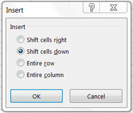
- Shift cells right: Dữ liệu trong ô hiện tại bị đẩy sang phải
- Shift cells down: Dữ liệu trong ô hiện tại bị đẩy xuống dưới.
- Entire row: Chèn cả dòng mới
- Entire column: Chèn cả cột mới
* Xóa hàng, cột, ô
- Xóa hàng/ cột: Chọn các hàng/cột cần xóa.
Chọn Home -> Group Cells -> Delete -> Delete Rows Delete Sheet Columns hoặc R_click chọn Delete.
- Xóa ô: Chọn các ô cần xóa. Chọn Home -> Group Cells -> Delete -> Delete Rows hoặc R_click chọn Delete.
* Thay đổi độ rộng của cột và chiều cao của hàng
Có thể thay đổi độ rộng của cột hoặc chiều cao của hàng bằng cách đưa chuột đến biến giữa tên cột/ hàng sau đó drag chuột để thay đổi kích thước.
- Home -> (Group Cells) -> Format
- Chọn Row Height để thay đổi chiều cao của hàng (hoặc chọn Column Width để thay đổi độ rộng của cột)
- Chọn AutoFit Row Height AutoFit Colum Width để tự động điều chỉnh kích thước vừa với dữ liệu.
* Canh lề dữ liệu trong ô
Chọn Home -> (Group Cells) -> Format -> Format Cells -> Aligment
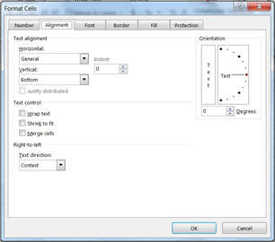
Hình 6.7. Hộp thoại Format Cell / Alignment
Text Alignment: Canh lề cho dữ liệu trong ô.
- Horizontal: Canh lề theo chiều ngang (Left/ Right/ Center/ Justified/ Center Across Selection/ Distributed/ Fill
- Vertical: Canh lề theo chiều đứng (Top/ Center/ Bottom/ Justify/ Distributed) Orientation: Chọn hướng cho dữ liệu (Nhập số đo góc quay trong ô Degrees) Text Control: Điều chỉnh dữ liệu
- Wrap text: Dữ liệu tự động xuống dòng khi gặp lề phải của ô.
- Shrink to fit: Dữ liệu tự động thu nhỏ kích thước cho vừa với ô
- Merge cells: Kết hợp các ô thành 1 ô.
* Định dạng ký tự trong ô
- Chọn Home -> Croup Cells -> Format -> Format Cell -> Font: Chọn kiểu định dạng. (Hoặc bâm chuột phải vào ô dữ liệu cần định dạng chọn lệnh Format Cells)
* Kẻ khung cho bảng tính
- Chọn Home -> Group Cells -> Format -> Format Cells -> Border.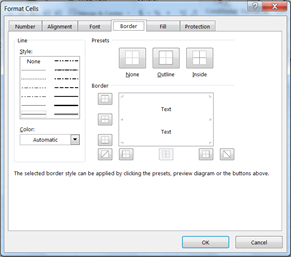
Hình 6.8 Hộp thoại Format Cell / Border
Presets: Chọn kiểu đường kẻ khung.
- None: Bỏ kẻ khung
- Inside: Kẻ các đường trong
- Outside: Kẻ đường viền xung quanh
Border: Cho phép chọn đường kẻ trực quan theo yêu cầu.
Line: Chọn kiểu và màu đường kẻ khung
- Style: Chọn kiểu của đường kẻ
- Color: Màu của đường kẻ
* Tô nền cho bảng tính
Chọn Home à (Group Cells) à Format à Format Cells à Fill
- Pattern Color: Chọn màu nền
- Pattern Style: Chọn các mẫu nền
Có thể tô nhanh bằng cách Click nút Fill Color ở Group Font
Lưu ý: Có thể mở hộp thoại Format Cells bằng cách chọn vùng dữ liệu, R_click chọn Format Cells trong Shortcut menu.